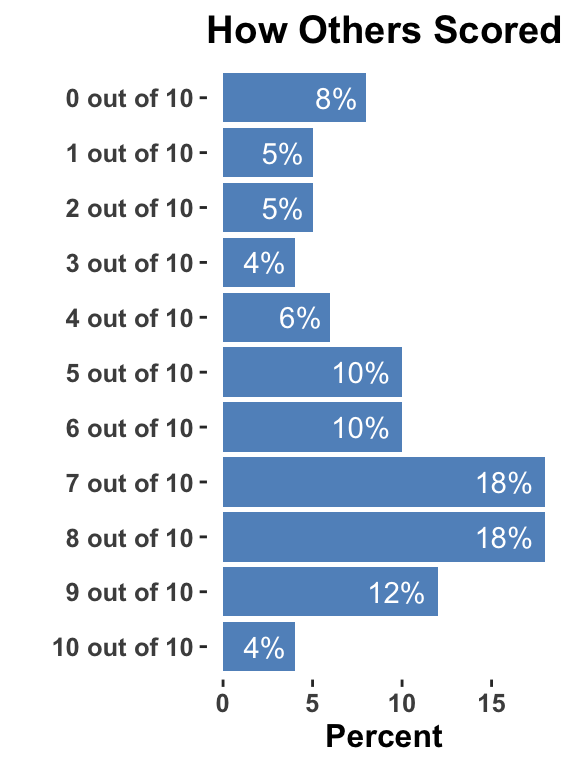

slide templates
Block quote
– [@neumann2016]
Auto-Animate
Automatically animate matching elements across slides with Auto-Animate.
Auto-Animate
Automatically animate matching elements across slides with Auto-Animate.
Replace Bullet Points with Fontawesome
- This list
- Doesn’t have bullets
A slide with a quote as the background !
– Graves (2022)
Original Image

Resized Image
Resized Image2
Multi-Column list
- One
- Two
- Three
- Four
- Five
- Six
- Seven
Fade In - Left Column First, Right Column (with image second)
Fade In - Left Column First, Right Column (with image second)
- Text 1.
- Text 2
Fade In - Left Column First, Right Column (with image second)
- Text 1.
- Text 2
Colored text
- Show this word in red.
- Show this word in blue.
- Show this word in green.
Background Image to Transparent Image with Text
Probabilities
- Text 1
- Text 2
- Text 3
Slide with Plot and Padding
Kaiser Health Insurance Quiz
Embed a Youtube Video
Re-size tables – Before re-sizing
| Type of study | Measurement/Valuation of costs both alternative | Identification of consequences | Measurement / valuation of consequences |
|---|---|---|---|
| Cost analysis | Monetary units | None | None |
| Cost-effectiveness analysis | Monetary units | Single effect of interest, common to both alternatives, but achieved to different degrees. | Natural units (e.g., life-years gained, disability days saved, points of blood pressure reduction, etc.) |
| Cost-utility analysis | Monetary units | Single or multiple effects, not necessarily common to both alternatives. | Healthy years (typically measured as quality-adjusted life-years) |
| Cost-benefit analysis | Monetary units | Single or multiple effects, not necessarily common to both alternatives | Monetary units |
Re-size tables – After re-sizing
| Type of study | Measurement/Valuation of costs both alternative | Identification of consequences | Measurement / valuation of consequences |
|---|---|---|---|
| Cost analysis | Monetary units | None | None |
| Cost-effectiveness analysis | Monetary units | Single effect of interest, common to both alternatives, but achieved to different degrees. | Natural units (e.g., life-years gained, disability days saved, points of blood pressure reduction, etc.) |
| Cost-utility analysis | Monetary units | Single or multiple effects, not necessarily common to both alternatives. | Healthy years (typically measured as quality-adjusted life-years) |
| Cost-benefit analysis | Monetary units | Single or multiple effects, not necessarily common to both alternatives | Monetary units |